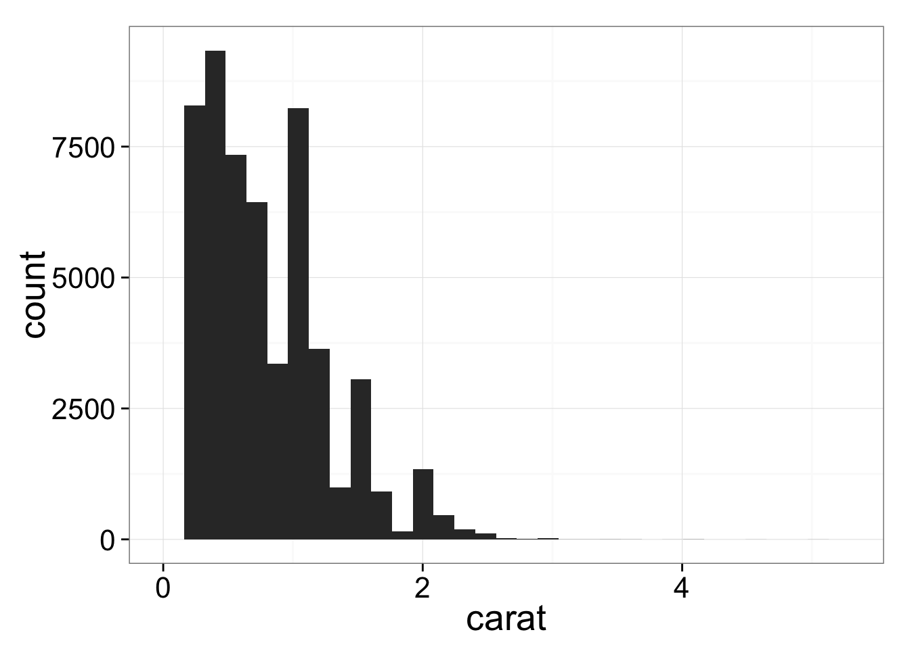
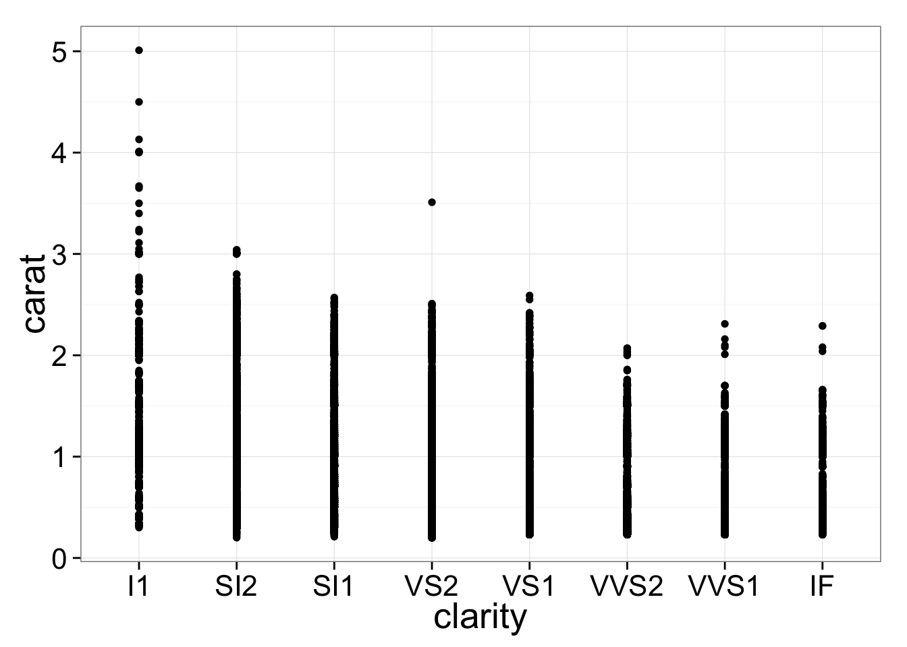
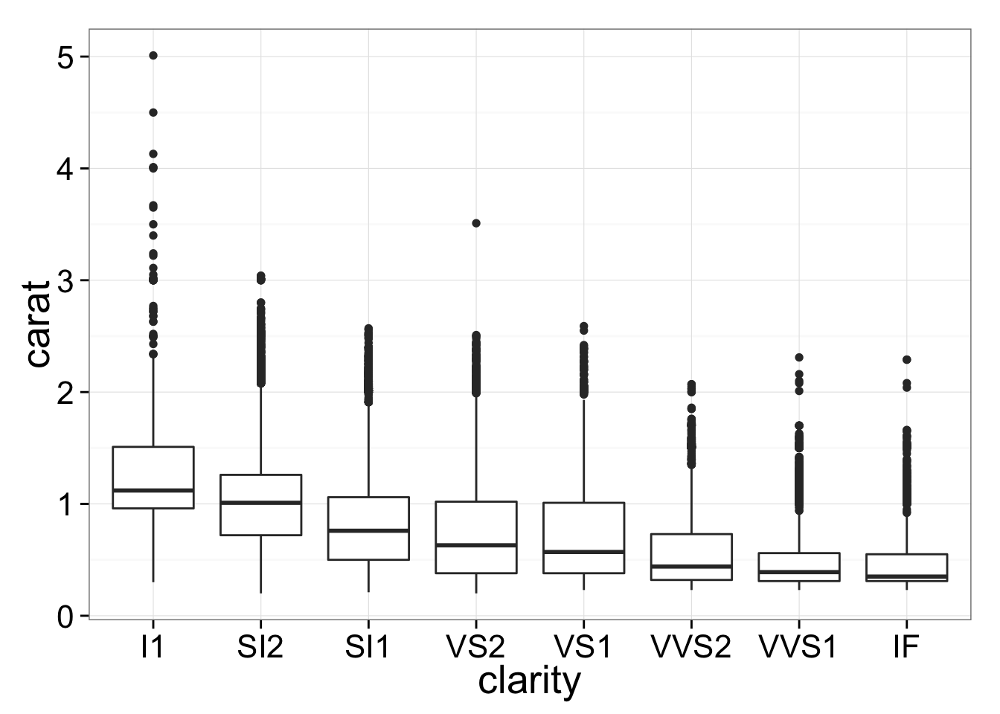
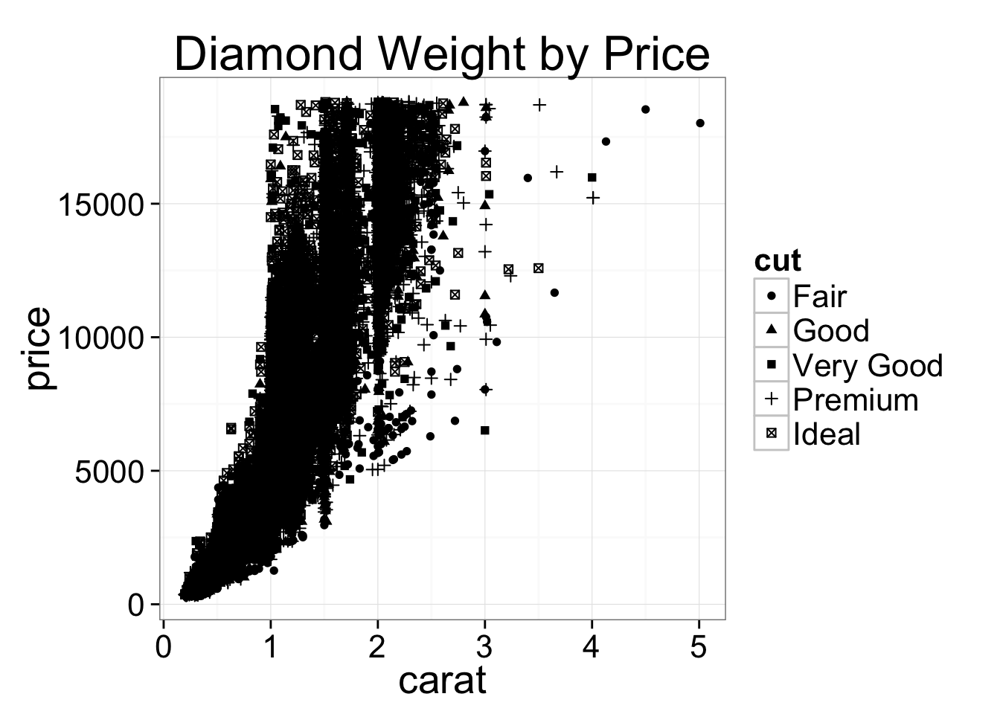
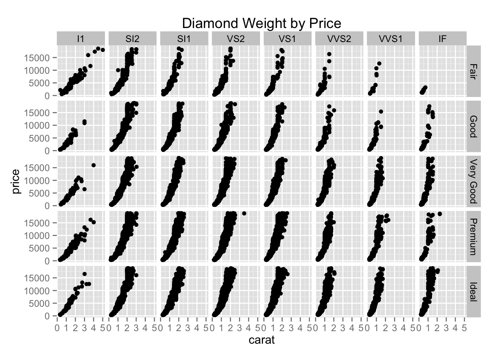
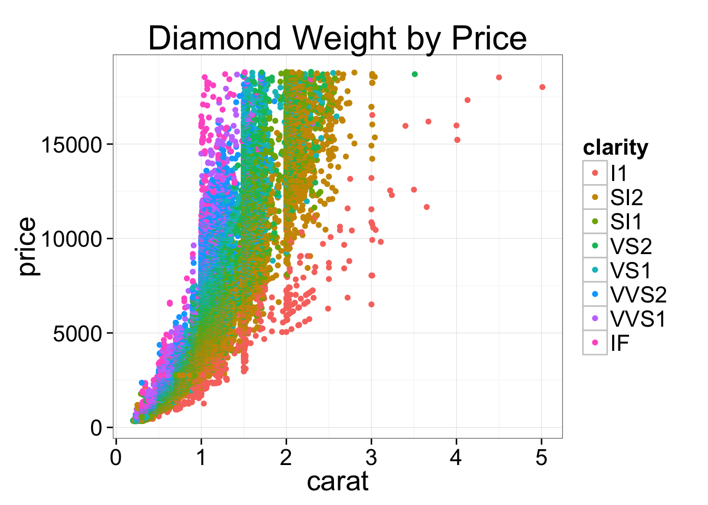
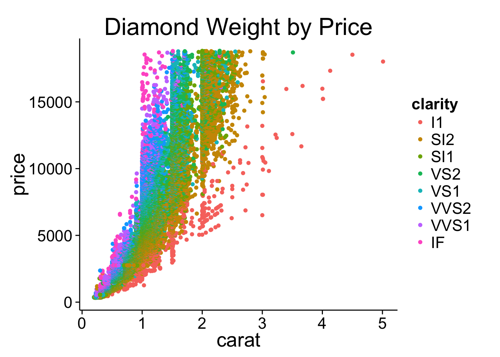
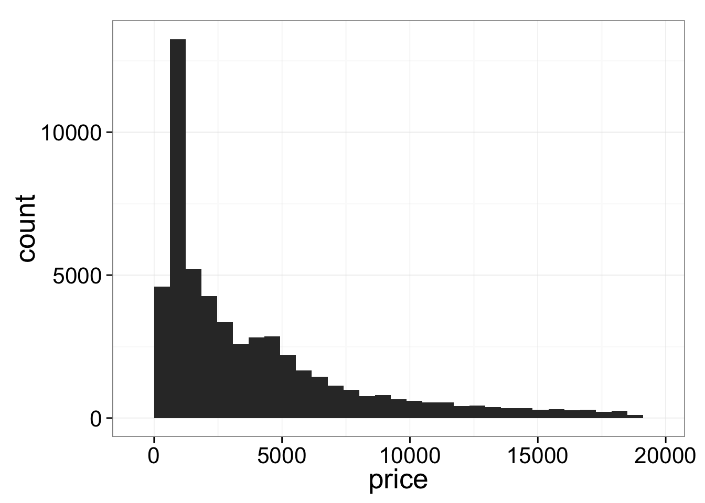

Visualizing Data and Automation in R
Visualizing Data
I am opinionated when it comes to graphics in R.
I prefer to not to use the standard graphics facilities in R, which are rather kludgy and take lots of tweaking to make the graphs look great. Instead, I prefer to use the ggplot2 package. You need to install this package using the standard package manager: Tools > Package Manager. Then you will load the package using the command library(ggplot2).
ggplot2 provides a convenient function called qplot() for making quick plots that don’t require a lot of customization.
Basic Plotting
We will use a built in dataset called diamonds. Lets take a look at the head (i.e. first few rows) of this dataset.
library(ggplot2)
head(diamonds)## carat cut color clarity depth table price x y z
## 1 0.23 Ideal E SI2 61.5 55 326 3.95 3.98 2.43
## 2 0.21 Premium E SI1 59.8 61 326 3.89 3.84 2.31
## 3 0.23 Good E VS1 56.9 65 327 4.05 4.07 2.31
## 4 0.29 Premium I VS2 62.4 58 334 4.20 4.23 2.63
## 5 0.31 Good J SI2 63.3 58 335 4.34 4.35 2.75
## 6 0.24 Very Good J VVS2 62.8 57 336 3.94 3.96 2.48Univariate plot
The simplest usage of qplot() is to provide a variable for the x axis, and a dataframe in which to look for this variable. qplot() will attempt to guess the best geom (graphical geometric representation) with which to display the data. Here we plot a histogram of diamond weights. As we would expect….most diamonds are small, so the graph is skewed to the left.
library(ggplot2)
qplot(x=carat, data=diamonds)## stat_bin: binwidth defaulted to range/30. Use 'binwidth = x' to adjust this.
Bivariate Plot
If we specify a variable for the y axis, then the default geom is a scatter of points. This time we will also specify a value for main which is the main title.
qplot(x=carat, y=price, data=diamonds, main="Diamond Weight by Price")
Boxplot
Now lets plot clarity by carat.
qplot(x=clarity, y=carat, data=diamonds)
We got points as the geom, but we can explicitly tell qplot() to use a different geom.
qplot(x=clarity, y=carat, data=diamonds, geom="boxplot")
Layers
The most common layer you will want to add is a line representing a linear regression. To do this, we start with the bivariate plot, then add a new layer.
qplot(x=carat, y=price, data=diamonds, main="Diamond Weight by Price") + stat_smooth(method="lm")
Challenge
The relationship here is clearly not linear. Recreate the plot in log space by computing the natural log of both variables. To save memory space do the log calculations inline, without saving the logged variables.
Color, Size, Shape, Fill
Sometimes we want to see the impact of other variables variables by color coding points, or changing the shape or size of points in relation to another variable. qplot() makes this very easy, and even automatically creates legends for us.
qplot(x=carat, y=price, data=diamonds, main="Diamond Weight by Price", color=clarity)
qplot(x=carat, y=price, data=diamonds, main="Diamond Weight by Price", shape=cut)
Facets
When we have so many data points, it is hard to tell what is going on. It would be nice to have a grid of sub-plots, so we can see the effect of these factors on the relationship between price and size. We can use the facets argument and tell it which factors we want to use, as in facets=row_var~column_var
qplot(x=carat, y=price, data=diamonds, main="Diamond Weight by Price", facets=cut~clarity)
Themes
There are a couple of shortcut theme functions that help you customize the look and feel of plots. A very popular one is theme_bw() which gets rid of the default grey background. You can also specify a value for the base text size, to increase size for presentations, etc. All the text elements will scale intelligently. Also check out theme_classic()
qplot(x=carat, y=price, data=diamonds, main="Diamond Weight by Price", color=clarity)+ theme_bw(20)
qplot(x=carat, y=price, data=diamonds, main="Diamond Weight by Price", color=clarity) + theme_classic(20)
Default Themes
To make all of your plots share the same look and feel you can set the theme at the beginning of your script and the theme elements will be applied for all plots. For instance:
theme_set(theme_bw(20))
qplot(price, data=diamonds)## stat_bin: binwidth defaulted to range/30. Use 'binwidth = x' to adjust this.
qplot(depth, table, data=diamonds)